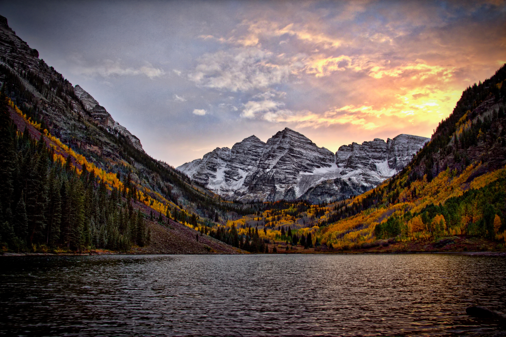
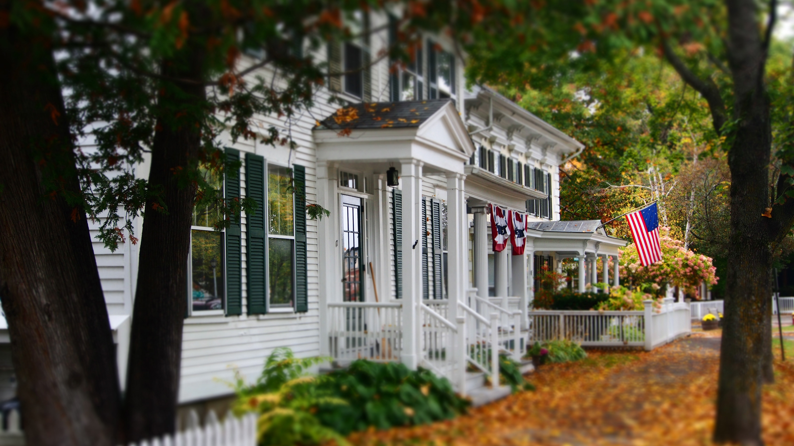

Теллурайд, Колорадо
Якщо ви хочете провести час на природі цієї осені, не дивіться далі, ніж барвистий Колорадо. Гірське місто Теллурайд особливо чудове цієї пори року та ідеальне місце, щоб побачити осінні кольори на повному екрані. У цьому районі є безліч стежок, якщо ви любите піші прогулянки або катання на гірських велосипедах; в іншому випадку прогулянка на (безкоштовній!) гондолі - це вражаючий спосіб помилуватися краєвидом. Тільки майте на увазі, що гондола курсує лише до середини жовтня, тому плануйте свою втечу на початку осені, щоб не пропустити цю пам’ятку. Проведіть решту днів, прогулюючись і роблячи покупки мальовничим гірським селом, пробуючи всі чудові заклади харчування або попиваючи холодне пиво, зварене талим снігом зі Скелястих гір у Telluride Brewing Company .
Нью-Йорк
«Ти не любиш Нью-Йорк восени? Це змушує мене купувати шкільне приладдя». Є причина, чому ця класична фраза з фільму You've Got Mail досі не застаріла через 25 років. Нью-Йорк восени просто найкращий. Заплануйте візит на середину-кінець жовтня, коли ви зможете побродити по Верхньому Іст- і Вест-Сайді та побачити красиві коричневі камені, прикрашені на Хелловін . Зайдіть у центр міста та проведіть неквапливий суботній чи недільний ранок у пошуках скарбів на блошиному ринку Челсі . Відвідайте метро на півдня, а потім прогуляйтеся Центральним парком, насолоджуючись звуком хрускоту листя під ногами. Закінчіть вихідні напоями в одному з таких відомих в Instagram гарячих точок Вест-Віллідж: Данте ,Бар Pisellino , або Boucherie .
Філадельфія, штат Пенсільванія

Філадельфія — це місце, яке часто забувають, і яке варто
відвідати, коли настане осінь. Філлі , де розташовані такі визначні
пам’ятки, як
Зал незалежності
та
будинок Бетсі Росс
, насичений історією. Просто побродіть вулицями Старого міста, і ви
практично зможете відчути шарм 18-го століття. Прогуляйтеся Алеєю
Ельфрет , яка датується 1703 роком і містить 32 чудових барвистих
будинки та невеликий музей. Вулиця виглядає ще приголомшливіше з осіннім
листям на землі. Гурмани не захочуть пропустити ринок
Reading Terminal Market , великий критий фермерський
ринок, де пропонують усі види кулінарних виробів. Після цього вирушайте
до
Музею мистецтв Філадельфії, де ви знайдете знамениті «Скелясті сходи». На вечерю не можна
пропустити
кафе White Dog Cafe в Юніверсіті-Сіті
— вишуканий ресторан із собачою тематикою.
Обов'язково замовляйте кренделі!
Вудсток, Вермонт
Ми не могли б скласти список мрійливих осінніх напрямків, не торкнувшись славетного Вермонту. Місто Вудсток розташоване приблизно за дві години їзди від найбільшого міста Вермонта Берлінгтона. Вудсток, відомий як одне з найкрасивіших міст США, є ідеальним місцем, щоб відпочити та насолодитися класичними осінніми розвагами , як-от збір яблук, піші прогулянки, дегустація кленового сиропу тощо. Жодна поїздка до Вермонта не буде повною без зупинки в милому готелі типу "ліжко та сніданок". На щастя, в районі Вудстока є з чого вибрати!
Портленд, штат Мен
Я навчалась в коледжі в центральному Мені, тож восени я на 100 відсотків першою визнаю, що маю упередження щодо Нової Англії. Якщо ви ніколи не були в Мені, пропоную здійснити осінню подорож до Портленда. Центр міста надзвичайно чудовий і наповнений усілякими барами, ресторанами, вінтажними магазинами та музеями. Якщо ви любите їсти, пити та займатися мистецтвом, це ідеальне місто для вас! Відвідайте Портлендський художній музей , повечеряйте в ресторані Duckfat (відомому своєю хрусткою смаженою на качиному жирі бельгійською картоплею фрі) і завершіть вечір у ресторані Blyth & Burrows . Якщо у вас є автомобіль, під’їдьте до головного світла Портленда — типового маяка, який ви часто бачите на фотографіях штату Мен — і зробіть кілька знімків, споглядаючи осіннє листя.